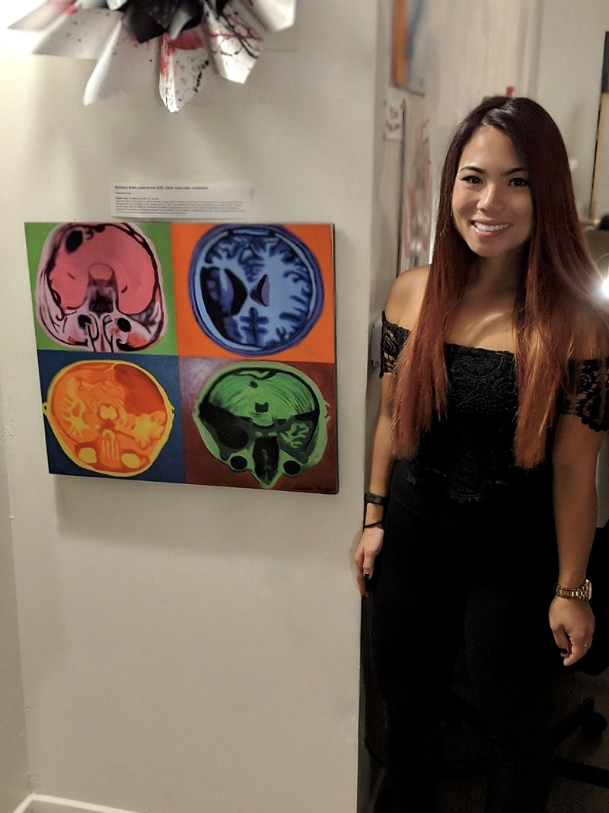

Hobbies improve work–life balance, increase productivity, and help scientists reach creative solutions in their work.
My hobbies include sculpting, drawing, and painting-usually inspired by data visuals and brain images produced by researchers in the field I look up to.

My first brain art piece was donated to Mindscapes: an exhibition held to reduce stigma surrounding mental health. All proceeds from the scientific artwork sold at this event go to mental health services for under-served communities and the LGBTQIA community in Pittsburgh. In academia it’s challenging not to get sucked into a bubble of constantly working and not volunteering; but giving back to the community, in any way, is crucial for a healthy work-life balance.

Diffusion Tensor Brain Imaging from the CoAx Laboratory: Split canvas on mixed media
Historically, the disciplines of developmental psychology and cognitive science, art and technology have had little interaction together despite being able to answer important questions when molded together. I'm bringing together these disciplines in my on-going research to contribute to the fields and make an impact on the community.